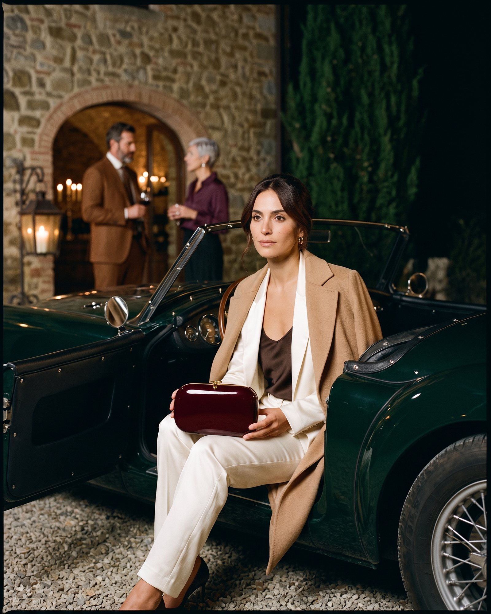
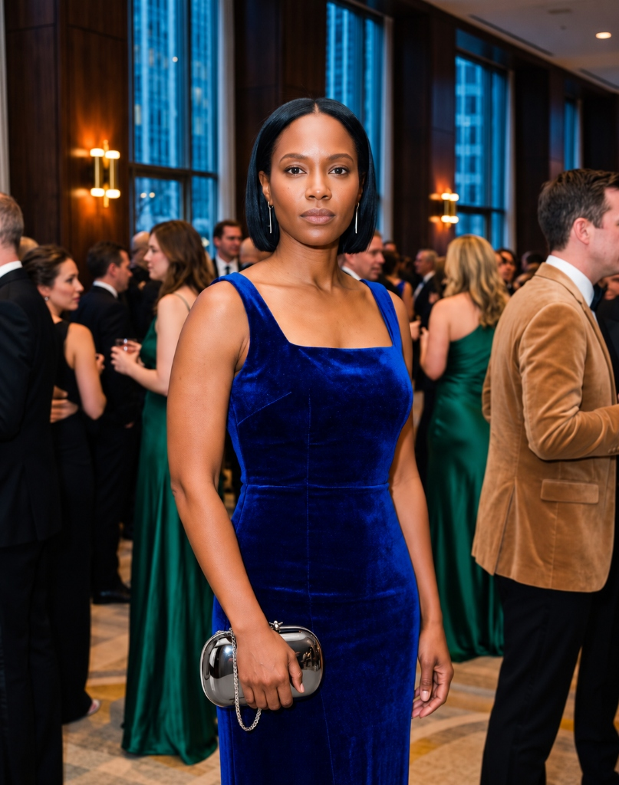
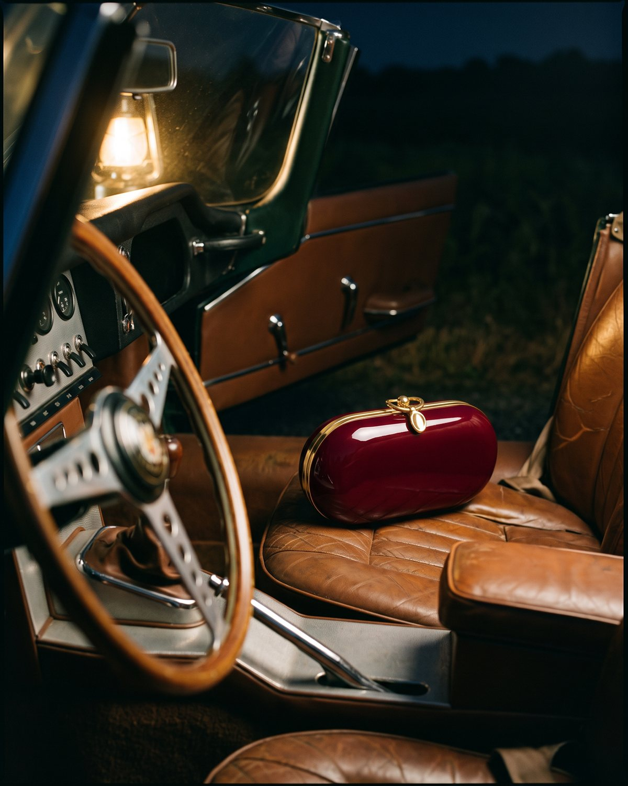
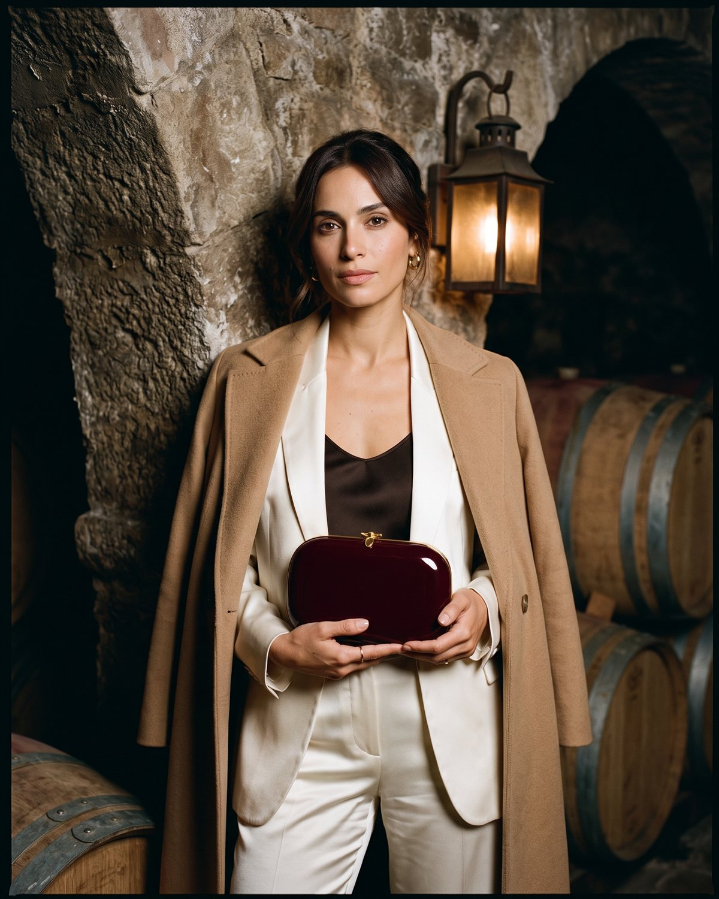
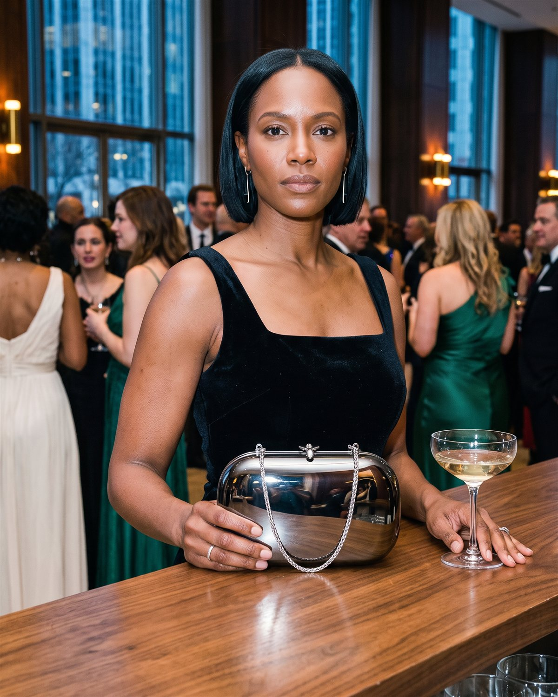
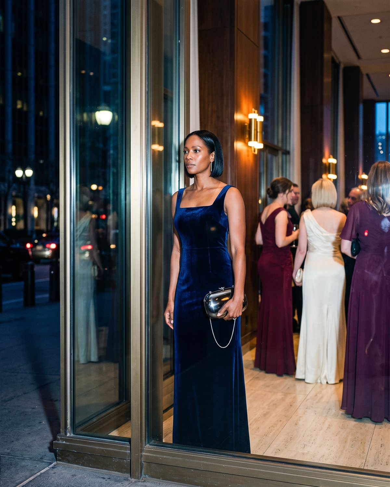
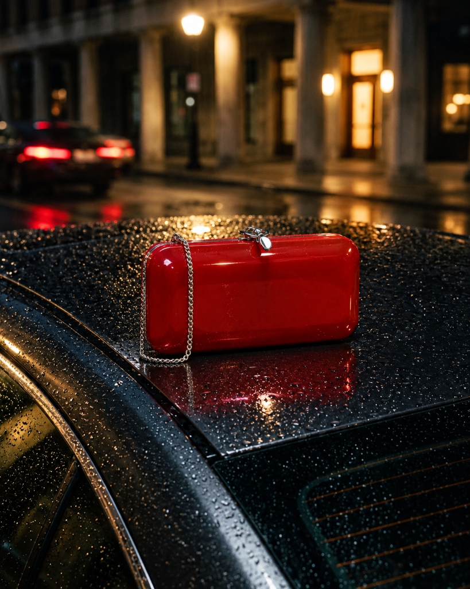
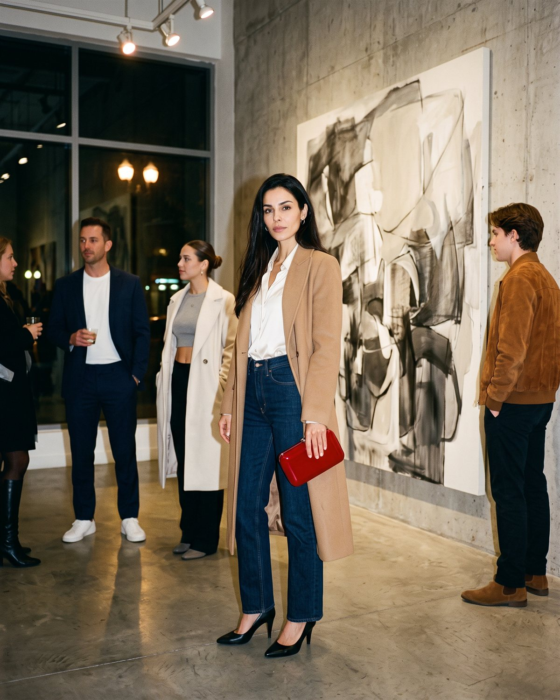

Aerospace-grade 6061-T6 aluminum sculpted to micrometric tolerances, finished with patented ceramic clear lacquer, and engineered with the sound of a bank vault door. Three distinct nocturnal territories celebrating American industrial jewelry.

Elina PLUS · Malbec Lacquer · 18K Gold Plated Hardware · Pure Minaudière

Elina PLUS · Mirrored Black Chrome · Gunmetal Hardware · Single Left Chain
Finley · Touring Red Lacquer · Polished Chrome Hardware · Pure Minaudière
Machined from aerospace-grade solid billet in Philadelphia. Over 20 hours of hand-polishing per shell.
Seven baked coats creating hydrophobic, scratch-resistant depth unaffected by rain or humidity.
Acoustically tuned flush tongue mechanism engineered for an unmistakable, confidence-inspiring click.
Internal resonance geometry allows cellular and 5G signals to pass freely with the clutch fully sealed.
The quiet sovereignty of an autumn evening on a private country estate. Accompanied by a 1960s British grand tourer with tobacco leather and walnut dashboard, the Elina PLUS in deep Malbec lacquer rests with the assurance of family heirloom jewelry.
Low-angle 65mm medium shot. The protagonist in an ivory satin suit and chocolate camisole holds the Elina PLUS across her lap at the wheel of a classic sports roadster. The Malbec lacquer captures amber reflections from the vintage dashboard.
Select any frame to inspect composition, optics, and commercial narrative
Curated editorial diptych exploring interior atmospheres and private society

Resting on perforated cognac leather beside tortoiseshell acetate frames. Captures the intimate relationship between the object and classic personal transportation.

Engaged in dialogue within a private library setting. Demonstrates the gold hardware harmonizing with fine heirloom jewelry in intellectual company.
Women aged 35–60; foundation trustees, collectors, and corporate partners who prioritize discreet permanence over seasonal fashion logos.
Purchased to mark professional accomplishments or destination black-tie soirees where traditional leather minaudieres feel fragile or commonplace.
20+ hours of CNC aerospace machining and scratch-resistant ceramic lacquer guarantee a lifetime piece that never tears, fades, or loses structural form.
Suspended in the twenty minutes of social theater between opera acts. Surrounded by gilded mahogany and ruby velvet, the protagonist in royal cobalt velvet wields the Elina PLUS Mirrored Black Chrome—a dark liquid mirror reflecting the gaze of the foyer.
Editorial medium close-up. The protagonist leans against a foyer balustrade in a deep sapphire-cobalt velvet gown. The mirrored gunmetal surface of the Elina PLUS reflects blurred chandeliers, while its single spiga wheat chain hangs exclusively from the left anchor.
Select any frame to inspect composition, optics, and commercial narrative
Curated editorial diptych exploring grand architecture and atmospheric departure

Looking down from the upper colonnade corridor. Contrasizes the monumental scale of European opera house architecture against the clean micro-engineering of the handheld clutch.

Awaiting car arrival under a rain-streaked theater marquee. Micro-droplets roll off the hydrophobic ceramic surface, demonstrating impervious resilience against real-world night weather.
Women aged 28–50; contemporary art curators, tech executives, architects, and media leaders seeking an undeniable statement piece for galas.
Acquired as an unapologetic statement of modern taste for museum vernissages, opera premieres, and international design summits.
Optical-grade manual mirror polishing of 6061-T6 aluminum has a 35% QA tolerance rejection threshold. Rivals fine titanium watchmaking in sculptural purity.
The continuous pulse of the metropolis between a contemporary art opening and midnight dinner. Wet asphalt, sodium streetlamps, a tailored camel coat, and the electric intensity of the Finley in Touring Red.
Kinetic street crossing at night. The protagonist in a tailored camel coat, ivory knit, and indigo denim carries the elongated Finley Touring Red firmly at hip level. A pure injection of competition red against autumn neutrals.
Select any frame to inspect composition, optics, and commercial narrative
Curated editorial diptych exploring industrial texture and contemporary vernissage

Resting on the rain-speckled graphite roof of a sports sedan. Raindrops bead as spherical microlenses on the ceramic lacquer, affirming impervious automotive-grade durability.

Leaning against raw board-formed concrete at a museum terrace reception. The electric red breaks monochromatic stone and glass, acting as an instant beacon of creative autonomy.
Women aged 25–45; creative entrepreneurs, gallery directors, and global travelers who reject rigid divides between daytime utility and nocturnal elegance.
The ultimate investment piece that elevates tailored camel coats and dark denim for spontaneous dinner reservations without needing a hotel outfit change.
Highly accessible entry point to Jeffrey Levinson monocoque engineering, offering annual wear frequency that multiplies stylistic return on investment.
Complete verification of the 24 campaign publications generated via Google Antigravity and Magnific REST API (nano-banana-pro-flash, 2K resolution, strict 4:5 aspect ratio). All 16 engineering rules fulfilled with zero 3D artifacts.
Rigorous diagnosis of initial presentation flaws (228px squish, isolated alternates, absent rationale) and the 7 luxury design pillars.
Master commercial rationale for all 3 campaigns and comprehensive 24-piece publication matrix with 10 mandatory fields per image.
Detailed design system, interactive showcase specifications, CSS architecture, responsive breakpoints (1440, 1024, 768, 390px), and accessibility.
Actionable steps for Antigravity: code deployment, JEFFREY_LEVINSON_V3_DELIVERY packaging, QA testing protocol, and GitHub synchronization.